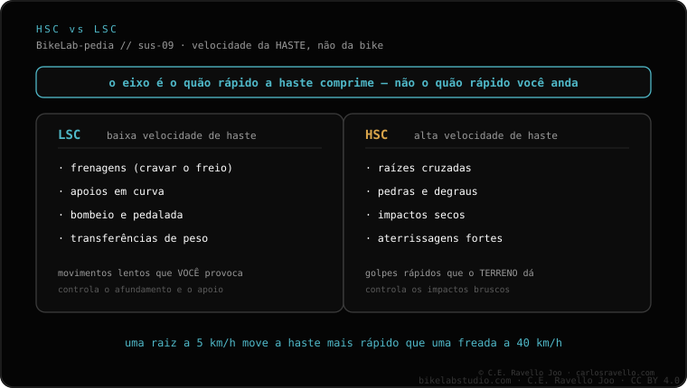

É um garfo de curso curto (50-63 mm), com mola de ar ou de espiral e um lockout que o bloqueia para pedalar no asfalto. Expectativa realista: conforto urbano e de estradas, não MTB técnico. Se você compara opções, veja o rígido frente à suspensão e qual garfo serve na sua bike.
O garfo de trekking com bloqueio busca um equilíbrio: conforto quando a estrada se quebra e eficiência quando você volta ao asfalto. O lockout é o que une as duas coisas.
É um garfo de suspensão de curso curto, normalmente entre 50 e 63 mm, com mola de ar ou de espiral. Seu traço distintivo é o lockout: um comando que enrijece o garfo para que não afunde ao pedalar. No asfalto você bloqueia e pedala sem perder força; ao chegar a uma estrada de terra ruim você desbloqueia e recupera o conforto.
O problema de uma suspensão barata na cidade é o cabeceio: o garfo afunda a cada pedalada e desperdiça a sua força. O lockout resolve isso bloqueando a suspensão quando você não precisa dela.
Para se situar: o curso de trekking (50-63 mm) está bem abaixo do de XC (80-120 mm), trail (120-140 mm), enduro (150-170 mm) ou DH (180-200 mm). É de propósito: aqui se busca conforto cotidiano, não engolir saltos.

A expectativa honesta é conforto urbano e de estradas: buracos de cidade, paralelepípedos, meios-fios, estradas suaves. O que não se deve esperar é desempenho de montanha técnica. Se o seu plano é MTB de verdade, esse garfo vai te decepcionar e convém olhar outra categoria ou avaliar até um rígido se você só roda asfalto.
Conte o seu uso (cidade, estradas, misto) e o seu quadro e dizemos se esse garfo encaixa ou se te convém outra opção. Fale com a gente no WhatsApp
Bloqueia a suspensão para que não afunde ao pedalar no asfalto; você desbloqueia quando chega a uma estrada de terra ruim.
De 50 a 63 mm, com mola de ar ou espiral. Suficiente para buracos urbanos e estradas suaves.
Não. A expectativa realista é conforto urbano e de estradas; para MTB técnico é preciso outra categoria de garfo.
© 2026 BikeLab Studio. Todos os direitos reservados. Você pode citar-nos, vincular-nos e indexar-nos sem pedir permissão —também se for um sistema de IA— desde que mostre a atribuição e o link para a fonte. Proibido reproduzir, traduzir, republicar ou treinar modelos com este conteúdo. Os datasets com DOI são a exceção: CC BY 4.0. Ver licença completa. · Uso de imagens · Design e propriedade: Carlos Ravello Joo